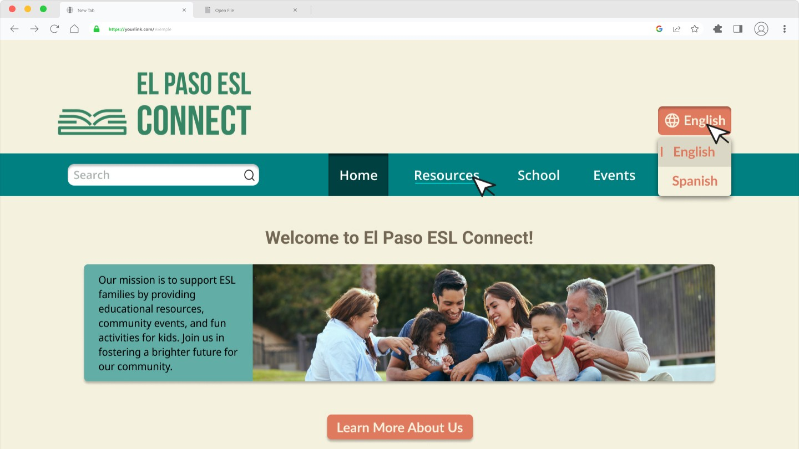
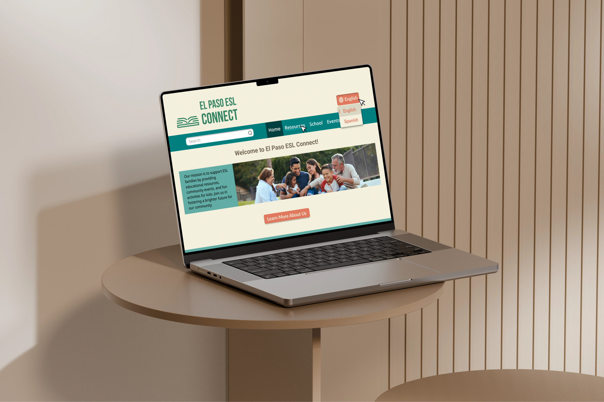

ESL Connect
A bilingual resource hub designed to help ESL families with elementary school children in El Paso, Texas find local schools, community resources, upcoming events, and interactive learning activities — all in one welcoming place.

Overview
The Brief
Create an engaging, user-friendly bilingual website to support ESL families with elementary school children in El Paso, Texas. The goal was a comprehensive resource hub where parents and kids can access local resources, school information, upcoming community events, and interactive learning activities — all while feeling welcomed and not overwhelmed.
The Challenge
Design a professional front page for an organization serving ESL families — a population with limited English proficiency, lower median income (~$55,710 in El Paso), and 82.9% Hispanic cultural background. The design needed to feel approachable in both English and Spanish, and help families quickly find essential resources like food banks, after-school programs, and affordable healthcare.
Target Audience
User Needs
Access to Local Resources
Contact information, eligibility details, and transportation options for essential services like food banks and healthcare.
Language Accessibility
Clear, concise content available in both English and Spanish to accommodate varying levels of English proficiency.
School Information
Details about local elementary schools, bilingual programs, and enrollment processes.
Community Connection
Upcoming events, workshops, and interactive activities to help families stay engaged and connected.
Research
Competitive Analysis
Five educational and community resource websites were analyzed to identify effective design patterns to apply to ESL Connect.
Starfall
Bright, consistent colors engage a young audience. Grid-based content layout is easy to navigate. Friendly, approachable writing style — though the abundance of colors can be overwhelming.
PBS LearningMedia
Resources neatly categorized by subject and media type. Visual icons indicate resource type (video, interactive) for quick identification.
American Library Association
Dropdown menus aid organization and navigation. Visually appealing graphics highlight programs — though multiple banners can overwhelm.
Nutrition.gov
Well-organized nav bar provides clear pathways. Large horizontal banner is visually engaging. Contrasting colors enhance readability and visual appeal.
Khan Academy
Minimalist layout with a white background and blue accents. Consistent color scheme, clear navigation, and content organized into educational categories with sub-categories.
Key Pattern
All five sites share: top navigation bars, prominent calls to action, and content organized into clear categories — all essential patterns for ESL Connect.
Design Strategy
Four key research insights shaped every design decision for ESL Connect.
Language Accessibility
With ~81% of El Paso's population being Hispanic, the site needed seamless bilingual support. A language toggle lets users switch between English and Spanish throughout the entire site.
Visual Appeal
Bright, engaging colors and welcoming imagery attract children and make the site feel inviting for families. A warm, vibrant palette — teal, coral, and cream — was chosen to feel energetic but not overwhelming.
Simplified Information
Parents prefer clear, concise content in small chunks — especially when English isn't their first language. All sections are broken into digestible pieces with clear headings and short descriptions.
Local Resources First
Families need immediate, easy access to El Paso-specific services. Local resources, schools, and community events are prominently featured above the fold with clear CTAs.
Information Architecture
The content was structured into five focused sections, each with a clear purpose and call to action — keeping every page visit goal-oriented.
Welcome & Overview
Introduces the site's mission with a welcoming hero image of diverse El Paso families, and a "Learn More About Us" CTA to set the tone.
Local Resources
Highlights key community resources — food banks, healthcare, support services — with brief descriptions and a "Find More Resources" CTA.
School Information
Features local elementary schools with descriptions of bilingual programs and a "Discover Schools Near You" CTA.
Upcoming Events
A carousel of community events, workshops, and activities with dates and a "Check Upcoming Events" CTA linking to a full calendar.
Fun & Educational Activities
Previews interactive educational games, stories, and activities for kids, with an "Explore Fun Activities" CTA.
Design System
Color Palette
Teal serves as the primary brand color and nav background. Coral drives all CTAs and active buttons. Sage provides section contrast without harshness, and cream keeps the overall feel warm and approachable.
Typography
Final Design
The final high-fidelity prototype brings the design system to life with real photography. The teal header carries the "EL PASO ESL CONNECT" logo alongside a search bar, a coral-accented bilingual language toggle (English / Spanish), and a "Donate" CTA. Below, a warm hero image of a diverse family opens the welcome section, followed by five alternating content sections — each with real photography, descriptive text, and coral CTAs — and a teal footer with social media links. The layout is fully responsive, with a dedicated mobile design using the same teal and coral palette.
View in Figma →
Reflection
What I Learned
This project taught me how to design with empathy for an audience with real-world constraints — limited English, limited income, and a real need for clarity over cleverness. Centering every decision on accessibility and usability, rather than visual novelty, led to a design I'm proud of. Building out a full content outline and wireframe before touching visuals made the final design process much more grounded.
Next Steps
To further improve this website, I would establish a feedback loop involving surveys, usability testing with actual ESL community members, and ongoing community input to make evidence-based improvements. I'd also explore adding a Spanish-first mode (defaulting to Spanish based on browser language settings) and deeper accessibility features such as screen reader optimization and larger touch targets for mobile.